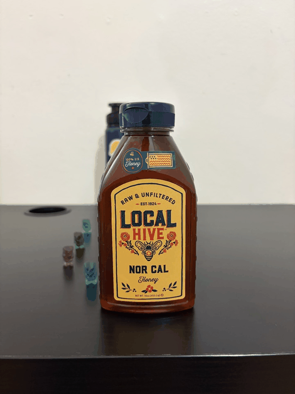

Programming Project #0 · Fall 2026
Becoming friends
with your camera.
An exploration of how camera position and focal length transform perspective—one portrait, one building, and one cinematic illusion at a time.
Explore the experiments00 / Introduction
Same subject.
Different perspective.
A zoom lens changes how large a subject appears in the frame, but camera position determines perspective. Across three experiments, I kept subject size roughly constant while changing my distance and focal length.
The results reveal that “zooming in” and “moving closer” are not interchangeable: each changes the spatial relationships captured by the image in a distinct way.
01 / Portrait Perspective
The wrong way
vs. the right way.
Moving farther away and zooming in produces a more natural-looking portrait, even when the face occupies the same amount of the frame.

Add images/portrait-close.jpg

Add images/portrait-zoom.jpg
02 / Architectural Perspective
Depth, flattened.
A distant, zoomed view compresses the scene. Moving closer with a wider field of view makes depth and converging lines more pronounced.

Add images/building-zoom.jpg

Add images/building-close.jpg
03 / The Dolly Zoom
Motion without
movement.
Moving backward while zooming in keeps the subject fixed but reshapes the world around it—the classic “Vertigo” effect.

Add images/dolly-zoom.gif
“The subject stays still while the background seems to breathe.”
For each frame, I moved the camera farther from the subject and increased the zoom enough to preserve the subject’s apparent size. The changing camera position alters perspective, while the changing focal length compensates for scale.
Final takeaway
Focal length controls framing.
Camera position controls perspective.